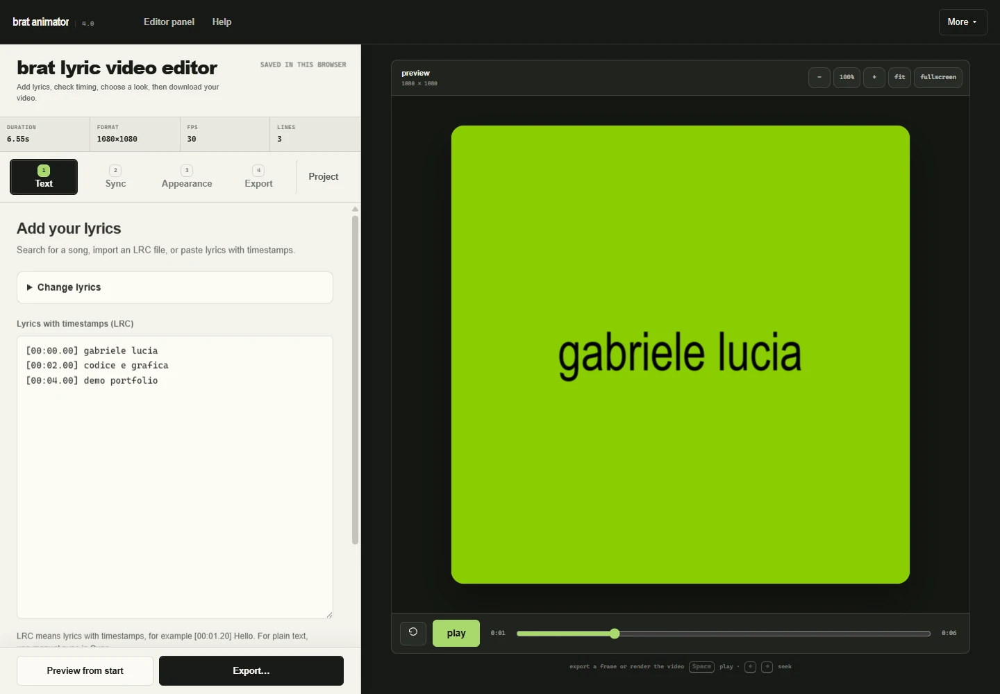

Mi sono avvicinato alla programmazione per curiosità. Volevo capire come funzionavano i software e provare a creare qualcosa di mio.
Con il tempo mi sono interessato sempre di più alla risoluzione dei problemi: capire cosa non funziona, trovare una soluzione e vedere il risultato nel programma che sto costruendo.
2021 — 2026
Scuola
Ho frequentato l’IIS A. Volta di Sassuolo, dove nel 2026 mi sono diplomato in Informatica e Telecomunicazioni. Per il progetto di diploma ho realizzato Beautify, un gestionale web in PHP e MySQL.
Il mio progetto di diploma2023 — 2026
Siti per attività locali
Dal settembre 2023 al giugno 2026 ho lavorato come sviluppatore web freelance e consulente SEO tra Sassuolo, Scandiano e dintorni. Ho realizzato siti per officine, centri estetici e negozi di utensileria.
Mi sono occupato delle interfacce, della pubblicazione e dell’indicizzazione sui motori di ricerca. Ho seguito anche la configurazione delle pagine social aziendali.
Grafica
Mi occupo anche di grafica: realizzo contenuti visivi per i social e progetto interfacce. È la parte visiva del mio lavoro, che affianco allo sviluppo software.

MAG — GIU 2025
Erasmus a Siviglia
Durante l’Erasmus+ ho lavorato a Starbotica, a Siviglia. Ho svolto attività informatiche e didattiche in un ambiente internazionale, usando ogni giorno inglese e spagnolo.
Il supporto IT comprendeva ambienti Windows, account Active Directory, reti locali e periferiche. Mi sono occupato della risoluzione di problemi hardware e software e della documentazione tecnica.
Mi è rimasta soprattutto una maggiore autonomia. Lavorare in un contesto nuovo mi ha aiutato ad adattarmi e a migliorare le mie capacità linguistiche.
AGO — SET 2026
Format SRL
In Format SRL, a Sassuolo, ho lavorato come apprendista software e automazione. Ho supportato la programmazione PLC e lo sviluppo di software per sistemi industriali.
Ho scritto script T-SQL su Microsoft SQL Server per backup, gestione e archiviazione dei dati. In questo contesto ho studiato come si collegano logica PLC, software applicativo e database.
Oggi
Studio Ingegneria Informatica all’Università di Modena e Reggio Emilia. Continuo a sperimentare con i miei progetti.
Mi interessano lo sviluppo web, i database e l’automazione. Nei progetti personali lavoro anche su strumenti per il browser, come Brat Animator.
Brat Animator, nel browserProgetti
Beautify
Progetto di diploma · PHP / MySQL
Ho progettato il database e sviluppato il backend di un CRM per clienti, appuntamenti, operatori e servizi.
Synk
Node.js / PostgreSQL / llama.cpp
Ho sviluppato l’intent picker, il database locale e la dashboard di Synk: instrada le richieste WhatsApp, collega gli appuntamenti a Google Calendar e offre strumenti di gestione e analitiche. Ho anche fatto fine-tuning di modelli quantizzati da 4B con llama.cpp.
Brat Animator
JavaScript / Canvas / WebCodecs
Un editor di lyric video che ho costruito per animare testi LRC ed esportare il risultato dal browser.
Fuori dal lavoro
Mi piace esplorare nuove tecnologie, sperimentare con progetti personali e imparare lingue straniere. Sono curioso per natura e mi interessa capire come funzionano le cose.
- Italiano
- Madrelingua
- Inglese
- C1
- Spagnolo
- B1
- Greco
- B1
- Cinese
- A2